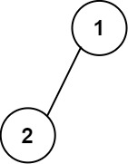
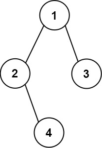

655. 输出二叉树
先量深度定行列数，再递归：每个子树占一段列区间，值放区间正中点，左右子树各分一半。
思路
- 深度
d（结点层数）决定形状：矩阵是d行、2^d − 1列，先全填空串。 - 递归
fill(node, r, lo, hi)：子树占列区间[lo, hi]，值放mid = (lo+hi)/2，左子树分[lo, mid−1]，右子树分[mid+1, hi]。 - 这个「对半分」与题面公式
c ± 2^(h−r−1)等价，但更好写更好记；空孩子直接返回。
图解
最优解
1import java.util.ArrayList;2import java.util.List;3 4class Solution {5 public List<List<String>> printTree(TreeNode root) {6 // 深度（层数）决定矩阵行数，列数 = 2^深度 - 17 int depth = depth(root);8 int cols = (1 << depth) - 1;9 List<List<String>> res = new ArrayList<>();10 for (int r = 0; r < depth; r++) {11 List<String> row = new ArrayList<>();12 for (int c = 0; c < cols; c++) row.add("");13 res.add(row);14 }15 fill(root, 0, 0, cols - 1, res);16 return res;17 }18 19 private int depth(TreeNode node) {20 return node == null ? 0 : 1 + Math.max(depth(node.left), depth(node.right));21 }22 23 // 当前子树占列区间 [lo, hi]，值放在正中间；左右子树各分一半24 private void fill(TreeNode node, int r, int lo, int hi, List<List<String>> res) {25 if (node == null) return;26 int mid = (lo + hi) / 2;27 res.get(r).set(mid, String.valueOf(node.val));28 fill(node.left, r + 1, lo, mid - 1, res);29 fill(node.right, r + 1, mid + 1, hi, res);30 }31}题目
给你一棵二叉树的根节点 root ，请你构造一个下标从 0 开始、大小为 m x n 的字符串矩阵 res ，用以表示树的 格式化布局 。构造此格式化布局矩阵需要遵循以下规则：
- 树的 高度 为
height，矩阵的行数m应该等于height + 1。 - 矩阵的列数
n应该等于2height+1 - 1。 - 根节点 需要放置在 顶行 的 正中间 ，对应位置为
res[0][(n-1)/2]。 - 对于放置在矩阵中的每个节点，设对应位置为
res[r][c]，将其左子节点放置在res[r+1][c-2height-r-1]，右子节点放置在res[r+1][c+2height-r-1]。 - 继续这一过程，直到树中的所有节点都妥善放置。
- 任意空单元格都应该包含空字符串
""。
返回构造得到的矩阵 res 。
示例 1：

输入：root = [1,2] 输出： [["","1",""], ["2","",""]]
示例 2：

输入：root = [1,2,3,null,4] 输出： [["","","","1","","",""], ["","2","","","","3",""], ["","","4","","","",""]]
提示：
- 树中节点数在范围
[1, 210]内 -99 <= Node.val <= 99- 树的深度在范围
[1, 10]内
题面取自力扣当前版本。
数据快照 2026-11-04。题面版权归力扣所有，本站点仅供本人学习使用，请勿对外发布。